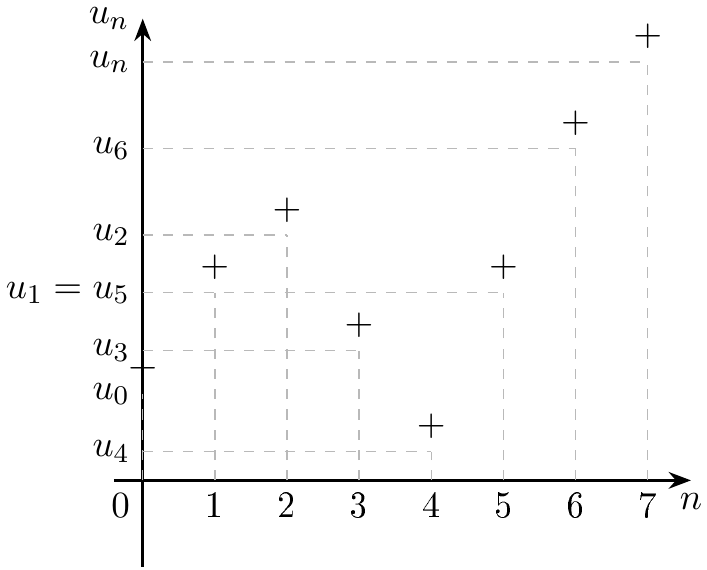
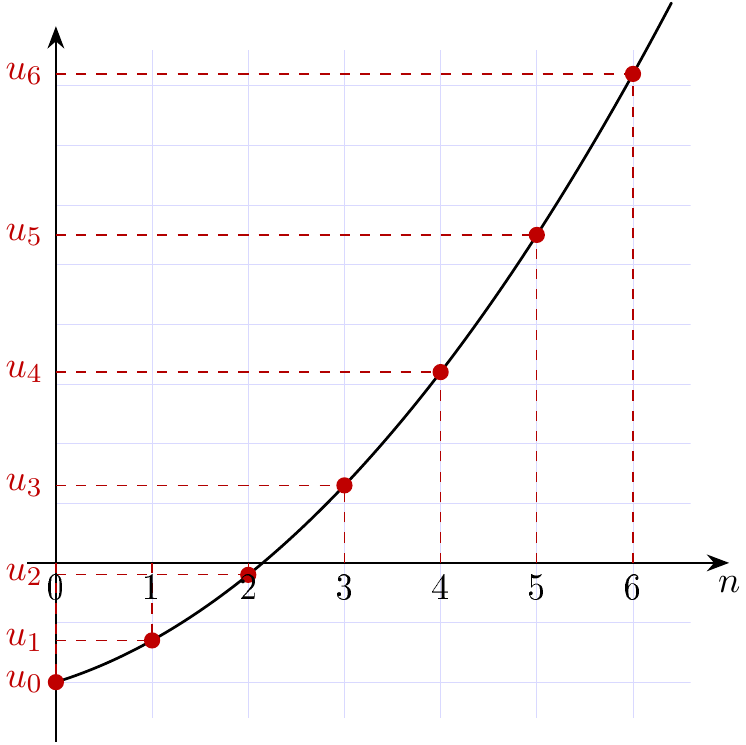

Chapitre I : Les suites numériques
Première STMG · Chapitre 1 — Les suites numériques · cours de Frederik de Peyrelongue
I. Définitions
On appelle suite numérique une liste ordonnée de nombres réels.
Une suite numérique $(u_{n})$ est une fonction dont l'ensemble de définition est $\N=\{0\,;1\,;2\,;3\,;4\,;5\,;\dots\}$ ou une de ses parties.
À la variable entière $n$, on associe le nombre $u(n)$ ou $u_{n}$, appelé terme de rang $n$ de la suite $u$.
La suite $(u_{n})$ des nombres pairs : $0\,;2\,;4\,;6\,;8\,;10\,;12\,\dots$
Ici $u_{0}=0$, $u_{1}=2$, $u_{2}=4$, …
La suite $(v_{n})$ des nombres : $16\,;8\,;4\,;2\,;1\,;1/4\,;\dots$
Ici $v_{0}=16$, $v_{1}=8$, $v_{2}=4$, …
Notations et vocabulaire :
$0\,;2\,;4\,;6\,;8\,;10\,;12\,\dots$ sont appelés les termes de la suite.
$0$ est le premier terme de la suite : on le note $u_{0}$ ($u$ indice $0$), on l'appelle le terme de rang « $0$ ». « $2$ » est le deuxième terme de la suite : on le note $u_{1}$ ($u$ indice $1$), on l'appelle le terme de rang $1$. Le rang correspond à l'indice.
Remarque : on peut aussi commencer avec l'indice $1$ ($2\,;3\,\dots$) au lieu de $0$.
II. Mode de définition d'une suite
Définition d'une suite par une relation de récurrence
Une suite est définie par récurrence lorsque le terme de rang $n$ est défini à partir de termes de rang qui le précèdent.
La suite $(u_{n})_{\N}$ définie par
La suite de Fibonacci, qui modélise la vitesse de reproduction des lapins, est elle aussi définie par récurrence par
Soit $(v_{n})$ la suite définie par
Calculer $v_{1}$, $v_{2}$, $v_{3}$.
Définition d'une suite de manière explicite
Une suite définie à l'aide d'une fonction $f$, définie sur $\N$, est dite définie de manière explicite. On a alors $u_{n}=f(n)$ pour $n\in\N$.
Soit $f(x)=x^{2}$ définie sur $\N$ : on peut ainsi définir une suite $w_{n}$ par $w_{n}=f(n)$. Calculer les $4$ premiers termes.
Remarque : la fonction peut être définie à partir d'une certaine valeur $n_{0}>0$ ; alors la suite $u_{n}$ sera définie à partir du rang $n_{0}$.
La fonction $h(x)=-\dfrac{5}{x-2}$ est définie pour $n>2$ : on pourra alors définir la suite $u_{n}=h(n)$ à partir du rang $n_{0}=3$.
Calculer les $4$ premiers termes.
III. Représentation graphique d'une suite
Représentation graphique
Pour représenter une suite $u$ dans un repère, on place :
- les indices $n$ sur l'axe des abscisses ;
- les termes $u_{n}$ sur l'axe des ordonnées ;
- les points de coordonnées $(n\,;u_{n})$ dans le repère sans les relier (image de points).

Représentation d'une suite définie par une formule explicite
Soit $f$ une fonction définie sur $\N$ et $u_{n}$ la suite définie par $u_{n}=f(n)$.
Pour représenter la suite $u$, on trace la fonction $f$ : les abscisses $0,1,2,\dots,n$ représentent le rang des termes de notre suite, et les images $f(n)$ représentent les termes de notre suite.

IV. Sens de variation d'une suite
- Une suite est croissante lorsque les termes de la suite sont classés en ordre croissant : pour tout entier naturel $n$, on a $u_{n+1}\geqslant u_{n}$.
- Une suite est décroissante lorsque les termes de la suite sont classés en ordre décroissant : pour tout entier naturel $n$, on a $u_{n+1}\leqslant u_{n}$.
Remarque : graphiquement, le nuage de points représentant la suite « monte de gauche à droite » lorsque la suite est croissante et « descend de gauche à droite » lorsque la suite est décroissante.
Méthode
Pour déterminer le sens de variation de la suite $(v_{n})$ :
- on calcule, pour tout $n$, la différence $v_{n+1}-v_{n}$ ;
- on étudie le signe de la différence ;
- si la différence est positive, alors la suite $(v_{n})$ est croissante ; si la différence est négative, alors la suite $(v_{n})$ est décroissante.
Étudier le sens de variation de la suite $(u_{n})$ définie, pour tout entier naturel $n$, par $u_{n}=-3n+5$.
1. On calcule la différence $u_{n+1}-u_{n}$ :
2. $u_{n+1}-u_{n}=-3<0$ pour tout $n$ entier.
3. La suite $(u_{n})$ est donc strictement décroissante.